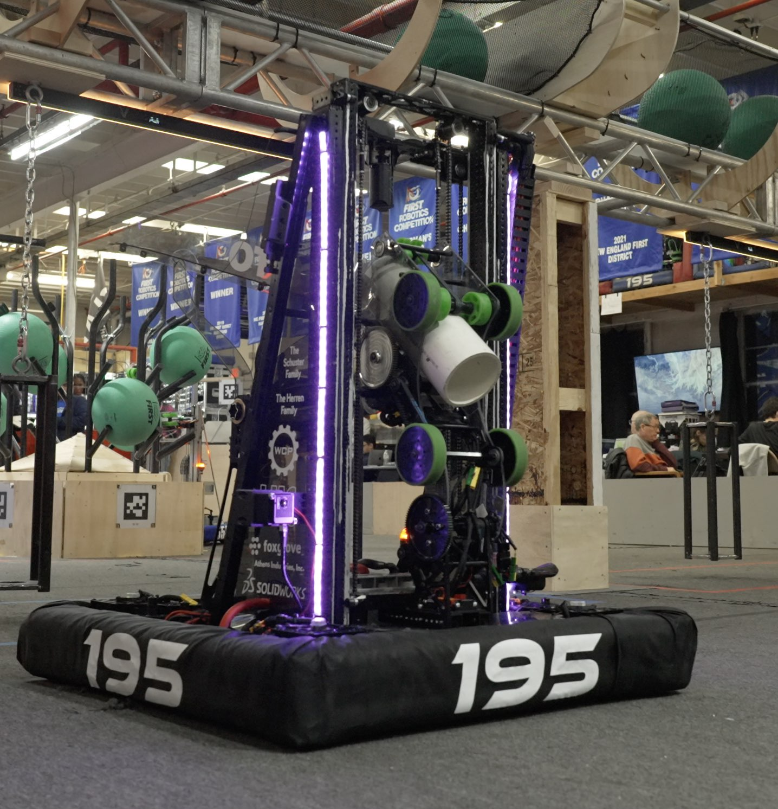

KnightQuil

Our robot, KnightQuil, consists of a few key subsystems. Firstly, it uses swerve drive with Kraken motors for maximum acceleration. In addition to this, we have a retractable funnel subsystem, which feeds into an elevator mechanism, which allows our robot to score coral (large PVC pipes) at multiple levels. We also have functionality to score algae (large inflatable balls) with the scoring mechanism at the end of the elevator. Later in the season, we decided to add a mini ground intake. Our robot is very unique programmatically, too.
As one of fewer than 20 FRC teams who use ROS2 as the operating system on our robot, we were able to split our robot's subsystems into multiple different nodes, like the drivebase, elevator, or climber. We made a model of a robot based on the actual CAD with accurate measurements. We also create a field simulation every year for the robot to drive in. This allowed us to test the systems on the computer first before using the robot.

The simulation also allowed us to test our autos, which use PathPlanner, an open-source path planning software. In 15 seconds, our robot scored 3 coral pieces on the high level, and it had multiple starting positions. As a programmer, I helped make the robot and field simulations and the autonomous period, tuned specialized cameras, and helped create the ground intake node when it was added before the world championships.